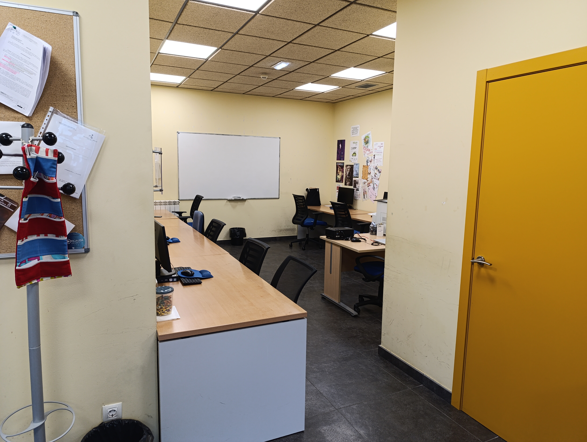
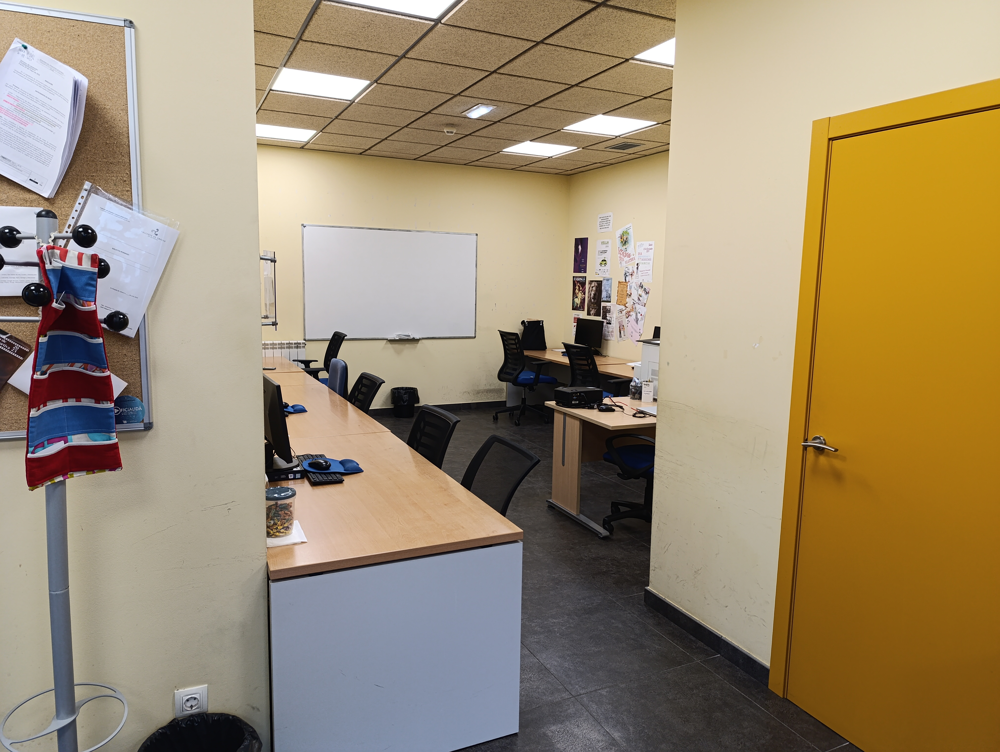

Nuestras Instalaciones
Modernas instalaciones en el corazón de Llanera
En los talleres de empleo de Llanera estamos comprometidos en brindar una educación de calidad que va más allá de lo ordinario. Nuestras instalaciones están diseñadas para ofrecer un ambiente de aprendizaje enriquecedor y estimulante para todos nuestros estudiantes.
Nos enorgullece ser parte de un proyecto que no solo imparte cursos de certificación en formación profesional, sino que también ofrece un año de experiencia práctica en diversas áreas.

Centro de Formación
El Aula
El Taller de Creación y publicación de Páginas Web (IFCD0110) dispone de un aula con 10 MiniPC DELL OptiPlex 3050 con chip Intel Core i5 con sus respectivos monitores Philips 223V de 22 pulgadas, así como de un ordenador portátil HP.
Para complementar la función multimedia del aula, se dispone de pizarra, impresora y proyector.
Espacios de aprendizaje modernos
Nuestras aulas están equipadas con la última tecnología y recursos educativos para garantizar que nuestros estudiantes tengan acceso a la información y herramientas más actualizadas.
Fomentamos la interacción y el aprendizaje colaborativo para que el alumnado desarrolle habilidades esenciales para el mundo laboral.
Experiencia práctica
En los Talleres de Empleo Llanera, entendemos la importancia de la experiencia práctica en la formación ocupacional.
Por eso ofrecemos a nuestros estudiantes la oportunidad de aplicar sus conocimientos en situaciones reales de trabajo durante un año completo. Esto les brinda una ventaja incalculable al ingresar al mercado laboral, ya que han tenido la oportunidad de desarrollar habilidades prácticas y adquirir experiencia en el campo que han elegido.
Aula Confección y Publicación de Páginas Web
Aula Dinamización de Actividades de Tiempo Libre Educativo Infantil Juvenil

 

Aula Diseño de Productos Gráficos
Aula Arreglos y Adaptaciones de Prendas y Artículos en Textil y Piel